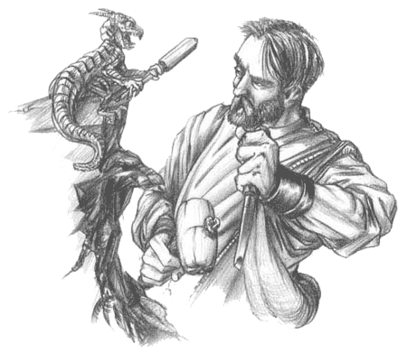

Forums galactiques > Poubelle publique de l'assemblée galactique > Poubelle automatique
Pages : 1 2 ... 5 6 7 ... 18 19
Cronos 28/02 ETU 09:02 | Malheureusement les dommages colhatheraux sont obliger . Ce commandant parle de moi , je l'avais attaquer car je suis en guerre contre toute la coalition dzeph étant donnée que eux m'ont attaquer injustement . Mais aprés toute cette guerre j'ai proposée la paix mais eux ne l'ont pas voulus alors cher peuple de l'assemblée la guerre est inéviable et les ha vont tombée . Mais certe si je dois en envoyer je rembourserai le triple de la somme perdu . cronos |
Cronos28/02 ETU 18:46 | Moi je pense que le commandant erhin n'est pas sinsere , je lui ai demander la paix et il la refusé. J'ai demandé la paix au commandant galen et dies_irae , ils l'ont aussi refusée alors que la balance penche en ma faveur , alors je ne pense pas etre en tort dans toutes ces histoires . Je ne veus la guerre à personne mais des commandants de mauvaise fois , me la font faire à mon encontre . cronos |
mikhail 01/03 ETU 01:15 | ... |
Angel Chaos 01/03 ETU 14:06 | Cher dechiqueteur , Cela suffis , vous saffez trés bien pourquoi se commandant vous a attaqué. Vous avez lachement prétée des planéte au commandant orathis pour quel envoie ses kamikazas . Le commandant cronos m'en a parlé hier soir . Alors arréter de jouer au malin car à force de prendre le peuple de l'assemblée pour des cons vous allez y laisser des plumes . Angel chaos |
Seigneur Hicham 02/03 ETU 14:33 | si j'était a ta place j'aurais choisi le paradis! QUI ne veut pas aller au paradis!? vous éte fou au paradis tu peut absolument tous faire! attendez mais sa sent le pouri...eurgh c'est ton corp en décoposition! tu ne devrai pas prendre une douche? |
Arzma 04/03 ETU 16:08 | Dignes ambassadeurs, salut! Voilà ce qui m'amène devant vous: ma colonie s'est peu développé, contrairement à une colonie appelée ATHENA qui semble viser la conquete de tout le systeme. Or, à la suite d'un échange diplomatique menaçant (nous prévenions que toute agression contre nos planetes seraient suivie de représailles ;) à la suite de cet envoi, donc, une entité inconnue - KALICH - nous a menacé en retour, son holo-courrier étant suivi à 3 mn exactement par la réponse tout aussi menaçante de ATHENA... deux courriers aussi rapprochés, quelle coïncidence!!! Y a-t-il matière à soupçonner un complot? pourquoi kalish intervient dans ce systeme qui ne lui est pas ouvert? Quels sont les rapports exacts entre athena et kalich? l'un d'entre vous souhaite s'immiscer dans le débat qui vient de s'ouvrir? ;) |
soilwork 06/03 ETU 09:24 | Je vois que finalement les commandants qui se disent respectables ne le sont pas ta tan que sa. Je vais mètre fin a cette discussion car le commandant Vladimir Harkonnen ne fait finalement par d'aucune excuse sur certain propos tenu a mon égard. ABRUTI, IE, part. passé, adj. et subst. I. [En parlant d'une pers.; la cause de l'abrutissement est indiquée par un compl. ou par le cont.; emploi princ. part.] Dont les qualités typiquement humaines (physiques, morales et surtout intellectuelles) ont été gravement diminuées. Voila se que me met le dictionnaire. Je trouve sa insultant que l'on me traite de diminué. Je suis désolé pour les fautes d'orthographe qui représente une obsession chez quelque commandant ou alors une envie de m'enfoncer d'avantage. Cordialement et respectueusement SOILWORK |
soilwork08/03 ETU 14:58 | bonjour a toutes et tous. Aujourd'hui mes invasions ont pris fin j'ai attaqué il est vrai enormément de planetes les raisons sont mon expansion. vous penserez et direz ce que vous voulez. je l'ai aussi fait pour montrer que je ne suis pas un commandant a sous estimer. je souhaite etre respectercommandant oneil comment voulez vous que je sache qu'el son tout les membres de votre coalition? je tien ossi a cinialez que j'ai fai sa de mon plein grée et que ma coalition n'est pas concerné par ces actes. je uis pres a rendre les planetes de certain commandant sans aucune négotiation. PS:je suis dispônible par MP si besoin d'explication ou autres. vraiment désolé pour les fautes ( probleme HRP ) |
soilwork08/03 ETU 15:24 | je me tiendrai a se que j'ai dit. tt les commandants souhaitant retrouvé leur planetes me contacter : loiclarouille@hotmail.fr je preferai que cela sur msn merci d'avance. pour se ne disosant pas de msn il reste tj les mp. commandant parisii, je vous est dit que je vous donnerai un systeme entier dans un futur elasse toujour indeterminé. je tiendrai cette parole cou que coute. |
soilwork08/03 ETU 17:44 | pourquoi nous quitter sachez que je n'est qu'une parole et que d'ici peu vous recupèrerer un systeme entier. soilwork |
| Commack  08/03 ETU 18:27 | Cher commandant c'est moi provox jai changer de profil pour vous aider je suis commercant vous aurait juste a me donner les fond et j'acheterai par contrebande pour vous(juste pour les membre du syndicat je suis entrer de develloper l'hyperfusion) |
jojo10/03 ETU 14:25 | c tout ce ke vous aver a fair c mieu pour vous |
shadow17 12/03 ETU 11:11 | desolé de marquer sa mais sa na aucun rapport j'aimerais bien avoir une coalition donc si quelqun'un veux bien me faire rentré dans sa coalition envoyé moi un mp. merci d'avance ps:m'enlevé pas de point |
soilwork12/03 ETU 20:37 | ecoute Empire Kilrathi c'est hectOR de z'gOR cherche pas ta tORs !!!!!! |
Deubeulekane 13/03 ETU 00:18 | Apres avoir entendu les commandants , Deubeulekane ce leva et quitta la salle ! |
punk[ghost] 13/03 ETU 13:39 | Il y en a RAL LE BOL de changé de gourvernement sasn arret. Ce n'est pas parce que vous voullez faire une guerre à plusieur personnes qu'il faut prendre le gouvernement. J'en ai ma claque des guerres de bébés attardé mentaux qui se prennent pour Adolf Hitler pas aussi puissant mais tout aussi fou! Bref je vais proposer un vote poru savori si les commandants on en ral le bol ou pas du changement de gouvernement toutes les 24 ou 48 Heures. |
soilwork14/03 ETU 13:46 | Bonjour a toutes et tous les commandants. J'ai l'honneur de vous annoncer que mon coéquipier Cronos, et moi-même ouvrons officiellement notre compagnie de mercenaire. Cette compagnie a pour but d'aider des commandants à désarmer, affaiblir, tuer... d'autres commandants et de permettre le développement des membres de notre coalition les plus faible. Pour se qui est du paiement nous gardons 50% des planètes récupéré et les 50 autres pourcents seront restitué au commandant qui nous engagera. Nous établirons aussi un prix en leems qui sera convertie à une égalité en énergies, métaux, ou diamants par rapport a la contrebande car les leems ne nous intéresse pas du tout. Nous demandons aussi d'être payé en 2 fois. - Une première moitié au début du contrat. - Et, l'autre moitié a la fin de celui-ci. Il est aussi bien évident que le prix évolue en fonction du commandant et de la tache demandée. Plus d'information seront précisé par MP à chaque personne souhaitant utiliser nos services. Nous déclinons aussi toute responsabilité de guerre. Celle-ci reviendra à la personne qui nous engagera. Respectueusement Soilwork et Cronos. |
khalim 14/03 ETU 18:31 | Il y a eu la même chose dans la G0. Un commandant s'était mis dans l'idée de créer une équipe de mercenaire qui aidèrent un jeune commandant qui se sentait étouffé par un autre, disons... moins jeune, si vous saisissez l'euphémisme. Voici donc notre mercenaire qui s'en va tout joyeux prendre quelques planètes du système natal de son pauvre client. Résultat? le gentil mercenaire se fait prendre la quasi totalité de ses possessions par le commandant qui avait ennuyé son client. Le mercenaire se plaignit ensuite à l'assemblée, alors que c'était lui le coupable. Je n'ai rien contre l'initiative de Cronos, mais j'ai bien hâte de voir lorsqu'il se frottera à plus fort que lui. |
Cronos14/03 ETU 20:31 | Le commandant Cronos arriva avec soilwork , la mine haute . Il dit : " Vous avez tout t'a fais raison ." Puis ils partirent rejoindre leur amis dans leur si belle coalition . |
Agarash 15/03 ETU 15:43 | ''Facil ma petite'' dit agarash tu lance 50 ha dans chaque systeme et apres tu trie les dechets , mais il faut prévoir des gilet anti-hyperatomique .... oui en effet les degats de l'arme hyperatomiques de sont ressentie sur une de mes planètes ..... en effet , oui en effet , en faite personnellement je m'en moque de votre vie .... vous pouriez avoir decouvert comment fair des fregate ou alors l'hyperfusion je m'en fou ..... personnellement et ce que je dit a tout le monde que je cherche a décourvrir k'arme supermegatomique ou alor le domptage de tyranausaure pour qu'il pilote des chasseurs bon je vais me faire huer aurevoir princesse de rien du tout |
Pages : 1 2 ... 5 6 7 ... 18 19
Forums galactiques > Poubelle publique de l'assemblée galactique > Poubelle automatique